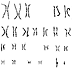
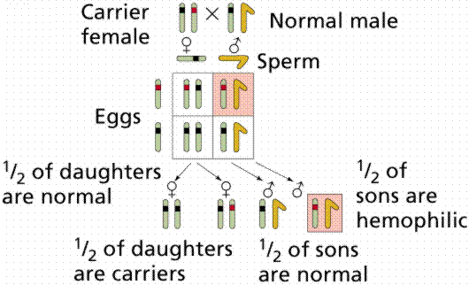

The human karyotype | Human chromosomal abnormalities
Human allelic disorders (recessive) | Human allelic disorders (dominant)
Sex-linked traits | Diagnosis of human genetic diseases | Radioactive probes
There are 44 autosomes and 2 sex chromosomes in the human genome, for a total of 46. Karyotypes are pictures of homologous chromosomes lined up together during Metaphase I of meiosis. The chromosome micrographs are then arranged by size and pasted onto a sheet.
Click here for a larger picture. This picture is from The Primate Cytogenetics Network at ( http://www.selu.com/~bio/cyto/karyotypes/Hominidae/Hominidae.html).
A common abnormality is caused by nondisjunction, the failure of replicated chromosomes to segregate during Anaphase II. A gamete lacking a chromosome cannot produce a viable embryo. Occasionally a gamete with n+1 chromosomes can produce a viable embryo.
In humans, nondisjunction is most often associated with the 21st chromosome, producing a disease known as Down's syndrome (also referred to as trisomy 21). Sufferers of Down's syndrome suffer mild to severe mental retardation, short stocky body type, large tongue leading to speech difficulties, and (in those who survive into middle-age), a propensity to develop Alzheimer's Disease. Ninety-five percent of Down's cases result from nondisjunction of chromosome 21. Occasional cases result from a translocation in the chromosomes of one parent. Remember that a translocation occurs when one chromosome (or a fragment) is transferred to a non-homologous chromosome. The incidence of Down's Syndrome increases with age of the mother, although 25% of the cases result from an extra chromosome from the father. Click here to view a drawing (from Bioweb) of a karyotype of Down's syndrome.
Sex-chromosome abnormalities may also be caused by nondisjunction of one or more sex chromosomes. Any combination (up to XXXXY) produces maleness. Males with more than one X are usually underdeveloped and sterile. XXX and XO women are known, although in most cases they are sterile. What meiotic difficulties might a person with Down's syndrome or extra sex-chromosomes face?
Human sex chromosome abnormalities. Image from Purves et al., Life: The Science of Biology, 4th Edition, by Sinauer Associates (www.sinauer.com) and WH Freeman (www.whfreeman.com), used with permission.
Kleinfelter's syndrome (click here to view a karyotype from Bioweb) How does this differ from the normal karyotype?
Turner's syndrome (click here to view a karyotype from Bioweb) How does this differ from the normal karyotype?
Chromosome deletions may also be associated with other syndromes such as Wilm's tumor.
Prenatal detection of chromosomal abnormalities is accomplished chiefly by amniocentesis. A thin needle is inserted into the amniotic fluid surrounding the fetus (a term applied to an unborn baby after the first trimester). Cells are withdrawn have been sloughed off by the fetus, yet they are still fetal cells and can be used to determine the state of the fetal chromosomes, such as Down's Syndrome and the sex of the baby after a karyotype has been made.
The first Mendelian trait in humans was described in 1905 (brachydactly) by Dr. Farabee (no relation to your author). Now more than 3500 human genetic traits are known.
Albinism, the lack of pigmentation in skin, hair, and eyes, is also a Mendelian human trait. Homozygous recessive (aa) individuals make no pigments, and so have face, hair, and eyes that are white to yellow. For heterozygous parents with normal pigmentation (Aa), two different types of gametes may be produced: A or a. From such a cross 1/4 of the children could be albinos. The brown pigment melanin cannot be made by albinos. Several mutations may cause albinism: 1) the lack of one or another enzyme along the melanin-producing pathway; or 2) the inability of the enzyme to enter the pigment cells and convert the amino acid tyrosine into melanin.
Phenylketonuria (PKU) is recessively inherited disorder whose sufferers lack the ability to synthesize an enzyme to convert the amino acid phenylalanine into tyrosine Individuals homozygous recessive for this allele have a buildup of phenylalanine and abnormal breakdown products in the urine and blood. The breakdown products can be harmful to developing nervous systems and lead to mental retardation. 1 in 15,000 infants suffers from this problem. PKU homozygotes are now routinely tested for in most states. If you look closely at a product containing Nutra-sweet artificial sweetener, you will see a warning to PKU sufferers since phenylalanine is one of the amino acids in the sweetener. PKU sufferers are placed on a diet low in phenylalanine, enough for metabolic needs but not enough to cause the buildup of harmful intermediates.
Tay-Sachs Disease is an autosomal recessive resulting in degeneration of the nervous system. Symptoms manifest after birth. Children homozygous recessive for this allele rarely survive past five years of age. Sufferers lack the ability to make the enzyme N-acetyl-hexosaminidase, which breaks down the GM2 ganglioside lipid. This lipid accumulates in lysosomes in brain cells, eventually killing the brain cells. Although rare in the general population (1 in 300,000 births), it was (until recently) higher (1 in 3600 births) among Jews of eastern central European descent. One in 28 American Jews is thought to be a carrier, since 90% of the American Jewish population emigrated from those areas in Europe. Most Tay-Sachs babies born in the US are born to non-Jewish parents, who did not undergo testing programs that most US Jewish prospective parents had.
Sickle-cell anemia is an autosomal recessive we have discussed in other sections. Nine-percent of US blacks are heterozygous, while 0.2% are homozygous recessive. The recessive allele causes a single amino acid substitution in the beta chains of hemoglobin. When oxygen concentration is low, sickling of cells occurs. Heterozygotes make enough "good beta-chain hemoglobin" that they do not suffer as long as oxygen concentrations remain high, such as at sea-level.
Autosomal dominants are rare, although they are (by definition) more commonly expressed.
Achondroplastic dwarfism occurs, even though sufferers have reduced fertility.
Huntington's disease (also referred to as Woody Guthrie's disease, after the folk singer who died in the 1960s) is an autosomal dominant resulting in progressive destruction of brain cells. If a parent has the disease, 50% of the children will have it (unless that parent was homozygous dominant, in which case all children would have the disease). The disease usually does not manifest until after age 30, although some instances of early onset phenomenon are reported among individuals in their twenties.
Polydactly is the presence of a sixth digit. In modern times the extra finger has been cut off at birth and individuals do not know they carry this trait. One of the wives of Henry VIII had an extra finger. In certain southern families the trait is also more common. The extra digit is rarely functional and definitely causes problems buying gloves, let alone fitting them on during a murder trial.
Color blindness afflicts 8% of males and 0.04 % of human females. Color perception depends on three genes, each producing chemicals sensitive to different parts of the visible light spectrum. Red and green detecting genes are on the X-chromosome, while the blue detection is on an autosome.
Hemophilia is a group of diseases in which blood does not clot normally. Factors in blood are involved in clotting. Hemophiliacs lacking the normal Factor VIII are said to have Hemophilia A, the most common form. Normal Factor VIII can be supplied at a high dollar and health risk cost, although the development of biotechnologically engineered Factor VIII produced by bacteria lessens the health risk. England's Queen Victoria was a carrier for this disease. The allele was passed to two of her daughters and one son. Since royal families in Europe commonly intermarried, the allele spread, and may have contributed to the downfall of the Russian monarchy (Czar Nicholas' son Alexei suffered from hemophilia A inherited from his mother who carried Victoria's genetic secret).

Inheritance of a human sex-linked trait. Images from Purves et al., Life: The Science of Biology, 4th Edition, by Sinauer Associates (www.sinauer.com) and WH Freeman (www.whfreeman.com), used with permission.
Muscular dystrophy is a term encompassing a variety of muscle wasting diseases. The most common type, Duchenne Muscular Dystrophy (DMD), affects cardiac and skeletal muscle, as well as some mental functions. DMD is an X-linked recessive occurring in 1 in 3500 newborns. Most sufferers die before their 20th birthday. In 1987, Louis Kunkel claimed to have isolated a protein, dystrophin, present in normal individuals (about 0.002 % of their muscle protein) but absent in two individuals with DMD. The lack of dystrophin is accompanied with a condition of muscle hardening known as fibrosis, which restricts blood supply to the muscle which then die. The gene technologies discussed in an earlier chapter have been employed to sequence and clone the dystrophin gene, which is the largest known human gene (some 2-3 million base pairs), with 60 exons and many large introns.
Restriction enzymes, such as Hpa I were used in a study on sickle-cell anemia. The probe hybridized in normal hemoglobin with two fragments 7000 or 7600 nucleotides long. Sickle-cell hemoglobin had hybridization with a 13,000 nucleotide single sequence. A similar result has been obtained from amniocentesis studies, providing a tool to screen fetus and adult for sickle-cell. The markers where hybridization occurred are referred to as RFLPs (restriction-fragment-length polymorphisms). The longer fragment in sickle-cell individuals is interpreted as evidence of a mutation in the recognition sequence. Two nucleotide sequences close together on the same DNA molecule tend to stay together. In the sickle-cell DNA the beta-chain hemoglobin gene has become linked with another gene that somehow alters the recognition sequence at which Hpa I hybridizes. Heterozygotes will have both long and short fragments, while a single type (short or long) will occur in homozygous dominant and recessive, respectively.
Huntington's disease was studied by James F. Gusella and his research team, who used RFLPs to identify a marker. Testing a large library of human DNA fragments, Gusella et al. found the needle in the haystack. The enzyme used was Hind III. Four fragments have been identified in an American family that has members suffering from the disease. The presence of fragment A has been identified in individuals who suffer from (or will suffer from) Huntington's. Pattern A occurs in 60 percent of the population, as well as the Huntington's sufferers. A Venezuelan family of 3000 members is descended from a German sailor who had Huntington's. This family had a strong correlation between Fragment C and the disease. Pattern C is much less common among the general population in this country. Many individuals do not wish to know if they will develop this disease; Woody Guthrie's children have chosen not to be tested.
Cystic fibrosis (CF) has also been studied with RFLP technology. CF is the most common genetic disease in Caucasians.
Hemophiliacs suffer from defective Factor VIII, which can be detected in fetuses 20 weeks old. A more accurate test, which can also be administered earlier during pregnancy, involves the use of a radioactive probe (36 nucleotide RNA fragment) which hybridizes restriction fragments. The gene for hemophilia is 186,000 base pairs, and has 26 exons separated by 25 introns. Mutations in the gene can be detected by RFLPs. This technology has also been used to detect the single base-pair difference between normal and mutated beta-chains, a screen for sickle-cell anemia. A DNA probe has been developed that hybridizes with the gene for dystrophin. The previous screening for Duchenne Muscular Dystrophy was a sex screen, with option to abort a male. The new technique allows differentiation between the healthy and diseased male fetus, so parents have more information with which to make an informed choice (if they chose). The hybridization only occurs if the normal dystrophin gene is present, no hybridization occurs in the DMD sufferer.
Email: mj.farabee@emcmail.maricopa.edu
Last modified:
The URL of this page is:
{kind=link}
{kind=link}
{kind=link}
{kind=link}